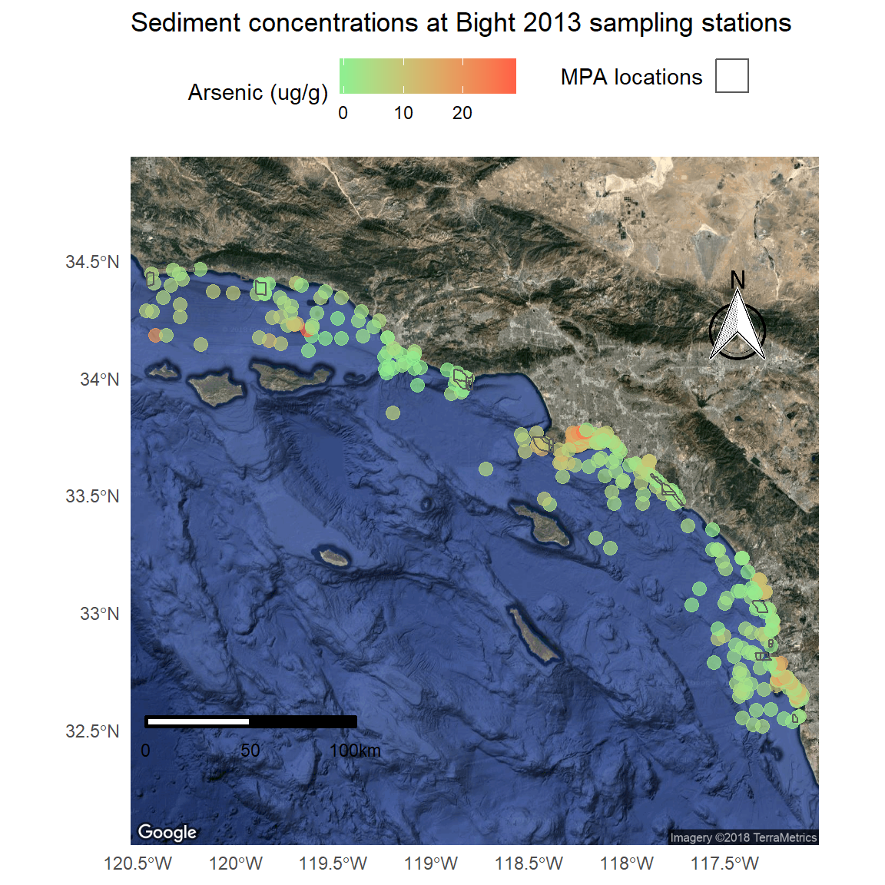

R luncheon 4
Lesson Outline
Welcome to the fourth and final R luncheon! In the last session we talked about how to use R for geospatial analysis using the sf package. In this session we’ll extend these analyses by demonstrating how R can be used to create publication-ready maps. Several of the packages in the tidyverse that we’ve already covered can be used for plotting. We’ll cover how to use ggplot2 for mapping and we’ll also cover some new packages that are not part of the tidyverse, in particular the ggmap and mapview package. You’ll find that the sf data object works out-of-the-box with most of these packages.
The goals for today are:
Understand how to use RMarkdown for reproducible and portable documents that include text, code, and output
Understand how to make basic maps in ggplot2 and ggmap using sf objects
Understand how to make interactive maps with the mapview package
A primer on mapping
Mapping spatial data falls under the broad category of data vizualization. The same motivation for creating a simple scatterplot can apply to creating a map. The overall goal is to develop insight into your data by visualizing patterns that cannot be seen in tabular format. Of course the added complication with spatial data is the inclusion of a location. How you handle this spatial component is up to you and depends on whether location is relevant for the plot or map.
Spatial data by definition always includes location information for each observation (i.e., the geometry attribute of a sf object). More often than not, additional variables not related to space may be collected for each observation. For example, multiple measurements of water quality taken at different locations in a lake can be indexed by latitude, longitude, and whatever water quality data were taken at a sample site. The only piece of information that makes the water quality data spatial is the location. Whatever your data look like, you have to choose if space is an important variable to consider given your question. For mapping spatial data, consider the following:
- Do I care about the spatial arrangement of my data?
- Would I expect my non-spatial data to vary by space?
- Are there other spatial units for aggregating my data that can help understand patterns?
The answer to these questions can help you decide what type of visualization is important for the data. On the other hand, mapping the data can also give you answers to these questions. We’ll explore different mapping approaches in this lesson that will help us address these questions.
Before we proceed, it’s useful to make a distinction between geospatial analysis and cartography. Both deal with spatial information to identify patterns or relationships in the data and both contain elements of mapping. The distinction between the two is that the former is often a means to achieving the latter. A map in the cartographic sense is a final product that is created through analysis that combines and summarizes data to understand patterns. Conversely, a map used for geospatial analysis is an intermediate, unrefined tool to gain insight through visual interpreation. Today we’ll focus on how R can be used for cartography. Geospatial analysis will be a necessary part of this process.
Using RMarkdown
Let’s get setup for today:
Open RStudio and create a new project.
In the new project directory, create a folder called “data”.
Download this zipped folder to your computer (anywhere) and copy its contents to the “data” folder in your project.
From the file menu, open a new R Markdown file within the project. Enter a title and your name for the file.
We haven’t used R Markdown yet but we’ll be using it for this luncheon because the compiled file is easy to share and works well with some of the more advanced mappping tools we’ll cover (e.g., mapview). The R Markdown file lets you run R code within the markdown document to integrate your descriptions of the analysis, R code, and R output into a single HTML file. You can think of this type of documentation as adding code to your comments rather than comments to your code. A more thorough introduction to R Markdown can be found here.
Your template should look like this:
---
title: "Mapping luncheon"
author: "Marcus"
date: "October 3, 2018"
output: html_document
---
```{r setup, include=FALSE}
knitr::opts_chunk$set(echo = TRUE)
```
## R Markdown
This is an R Markdown document. Markdown is a simple formatting syntax for authoring HTML, PDF, and MS Word documents. For more details on using R Markdown see <http://rmarkdown.rstudio.com>.
When you click the **Knit** button a document will be generated that includes both content as well as the output of any embedded R code chunks within the document. You can embed an R code chunk like this:
```{r cars}
summary(cars)
```
## Including Plots
You can also embed plots, for example:
```{r pressure, echo=FALSE}
plot(pressure)
```
Note that the `echo = FALSE` parameter was added to the code chunk to prevent printing of the R code that generated the plot.You can click the knit button at the top of the source window in RStudio to compile the document.

Let’s edit our RMarkdown file for today’s luncheon. Let’s remove everything except the header material (this tells RStudio how to compile the file) and add an empty code chunk. We’ll set the options for the code chunk to warning = FALSE and message = FALSE. This keeps extra text from being included in the compiled document.
---
title: "Mapping luncheon"
author: "Marcus"
date: "October 3, 2018"
output: html_document
---
```{r, warning = FALSE, message = FALSE}
```Now we can put any R code for the lesson in this code chunk. It’s always a good idea to put the package dependencies and the data imports at the top so you know everything that is required to compile the file. We’ll be using the tidyverse, readxl, sf, ggsn, ggmap, and mapview packages for today.
---
title: "Mapping luncheon"
author: "Marcus"
date: "October 3, 2018"
output: html_document
---
```{r, warning = FALSE, message = FALSE}
library(tidyverse)
library(readxl)
library(sf)
library(ggsn)
library(ggmap)
library(mapview)
```Using ggplot2 and geom_sf
We’ll use the same Bight sampling data from last time with the addition of sediment chemistry data. We’ll also be using the polygon data for the Marine Protected Areas (MPAs) to characterize the sediment conditions from the point samples.
In the code chunk, import the station location data, MPA shapefile, and sediment chemistry data.
# station locations
stations <- read.csv('data/AllBightStationLocations.csv')
# MPA polygons
polys <- st_read('data/Bight13_MPAs_Offshore.shp', quiet = T)
# sediment chemistry
sedchem <- read_excel('data/B13 Chem data.xlsx')We’ll need to format the data a bit before we combine and ultimately create a map. If you remember from last time, one of the most important elements of working with geospatial data is a shared coordinate reference system or CRS. We’ll use the CRS from the polys data object but first we need to convert the stations data into a sf object.
stations <- stations %>%
st_as_sf(coords = c('Longitude', 'Latitude'), crs = '+proj=longlat +ellps=WGS84 +datum=WGS84 +no_defs')Now we can use a spatial transformation to convert the polys object to the same CRS as stations. We can verify that both are in the same coordinate system when we’re done.
polys <- polys %>%
st_transform(crs = st_crs(stations))
polys## Simple feature collection with 25 features and 2 fields
## geometry type: MULTIPOLYGON
## dimension: XY
## bbox: xmin: -120.4524 ymin: 32.53337 xmax: -117.127 ymax: 34.46945
## epsg (SRID): 4326
## proj4string: +proj=longlat +datum=WGS84 +no_defs
## First 10 features:
## Region MPA_Name geometry
## 1 Campus Point Campus Point MULTIPOLYGON (((-119.8442 3...
## 2 Naples Naples MULTIPOLYGON (((-119.9333 3...
## 3 Kashtayit Kashtayit MULTIPOLYGON (((-120.2078 3...
## 4 Abalone Cove Abalone Cove MULTIPOLYGON (((-118.375 33...
## 5 Point Vicente Point Vicente MULTIPOLYGON (((-118.445 33...
## 6 Point Dume Point Dume MULTIPOLYGON (((-118.8074 3...
## 7 Point Dume Point Dume MULTIPOLYGON (((-118.82 33....
## 8 Dana Point Dana Point MULTIPOLYGON (((-117.7489 3...
## 9 Laguna Beach Laguna Beach MULTIPOLYGON (((-117.7948 3...
## 10 Laguna Beach Laguna Beach MULTIPOLYGON (((-117.8049 3...st_crs(polys) == st_crs(stations)## [1] TRUEThe next step is to join the sediment chemistry data with the station data. We’ll have to wrangle the chemistry data first to remove some extra columns and filter by a parameter of interest.
sedchem## # A tibble: 9,089 x 16
## Year Source StationID Replicate Field5 Field6 SampleDate
## <dbl> <chr> <chr> <dbl> <lgl> <lgl> <dttm>
## 1 2013 Bight B13-8002 1 NA NA 2013-08-05 00:00:00
## 2 2013 Bight B13-8002 1 NA NA 2013-08-05 00:00:00
## 3 2013 Bight B13-8002 1 NA NA 2013-08-05 00:00:00
## 4 2013 Bight B13-8002 1 NA NA 2013-08-05 00:00:00
## 5 2013 Bight B13-8002 1 NA NA 2013-08-05 00:00:00
## 6 2013 Bight B13-8002 1 NA NA 2013-08-05 00:00:00
## 7 2013 Bight B13-8002 1 NA NA 2013-08-05 00:00:00
## 8 2013 Bight B13-8002 1 NA NA 2013-08-05 00:00:00
## 9 2013 Bight B13-8002 1 NA NA 2013-08-05 00:00:00
## 10 2013 Bight B13-8002 1 NA NA 2013-08-05 00:00:00
## # ... with 9,079 more rows, and 9 more variables: Matrix <chr>,
## # Field9 <lgl>, Parameter <chr>, Qualifier <lgl>, Result_Units <chr>,
## # Result <dbl>, MDL <dbl>, RL <dbl>, Class <chr>sedchem <- sedchem %>%
select(Year, StationID, Parameter, Result_Units, Result) %>%
filter(Parameter %in% 'Arsenic')
sedchem## # A tibble: 346 x 5
## Year StationID Parameter Result_Units Result
## <dbl> <chr> <chr> <chr> <dbl>
## 1 2013 B13-8002 Arsenic ug/g dw 1.23
## 2 2013 B13-8008 Arsenic ug/g dw 2.67
## 3 2013 B13-8013 Arsenic ug/g dw 6.96
## 4 2013 B13-8014 Arsenic ug/g dw 2.89
## 5 2013 B13-8017 Arsenic ug/g dw 7.08
## 6 2013 B13-8018 Arsenic ug/g dw 1.92
## 7 2013 B13-8020 Arsenic ug/g dw 14.7
## 8 2013 B13-8029 Arsenic ug/g dw 4.95
## 9 2013 B13-8043 Arsenic ug/g dw 5.26
## 10 2013 B13-8045 Arsenic ug/g dw 9.03
## # ... with 336 more rowsNow we can join the two datasets. We’ll join by StationID and Year using inner_join() to get only the records that are shared between the two. Note that the stations data includes all Bight years and we can use an inner join to save us an extra step of filtering the stations by 2013.
stations <- stations %>%
rename(Year = Bight) %>%
inner_join(sedchem, by = c('StationID', 'Year'))
stations## Simple feature collection with 321 features and 5 fields
## geometry type: POINT
## dimension: XY
## bbox: xmin: -120.4556 ymin: 32.51682 xmax: -117.1051 ymax: 34.4647
## epsg (SRID): 4326
## proj4string: +proj=longlat +datum=WGS84 +no_defs
## First 10 features:
## StationID Year Parameter Result_Units Result geometry
## 1 B13-8002 2013 Arsenic ug/g dw 1.23 POINT (-117.1281 32.55659)
## 2 B13-8008 2013 Arsenic ug/g dw 2.67 POINT (-117.1206 32.55824)
## 3 B13-8013 2013 Arsenic ug/g dw 6.96 POINT (-117.1337 32.62351)
## 4 B13-8014 2013 Arsenic ug/g dw 2.89 POINT (-117.1346 32.6265)
## 5 B13-8017 2013 Arsenic ug/g dw 7.08 POINT (-117.131 32.63191)
## 6 B13-8018 2013 Arsenic ug/g dw 1.92 POINT (-117.1072 32.63403)
## 7 B13-8020 2013 Arsenic ug/g dw 14.68 POINT (-117.1312 32.64183)
## 8 B13-8029 2013 Arsenic ug/g dw 4.95 POINT (-117.1178 32.6468)
## 9 B13-8043 2013 Arsenic ug/g dw 5.26 POINT (-117.1051 32.65008)
## 10 B13-8045 2013 Arsenic ug/g dw 9.03 POINT (-117.1229 32.65143)The combined data includes 321 records of arsenic at the 2013 Bight monitoring sites. Let’s use ggplot2 and the geom_sf geometry to plot these points and map the relative values of arsenic across the Bight.
ggplot(stations) +
geom_sf(aes(colour = Result))
Up to this point we’ve wrangled the data using some pretty simple tools for limited geospatial analysis. Now we’re ready to start thinking about cartography or how we want to show these data to demonstrate variation in sediment chemistry across the Bight. First you’ll notice how simple it was to plot these data with geom_sf. This geometry is a new addition to a recent release of ggplot2 that takes care of a lot of the headaches of plotting spatial data, including axis formatting and correct scaling for the CRS. The other real advantage of this geometry is that it uses many of the existing ggplot2 aesthetics, such as mapping a variable to colour. Using ggplot2 with sf objects is a breeze if you’re already comfortable using ggplot2 with other geometries.
However, this simple map is still lacking some features that make it a finished product. Let’s change some of the mapping aesthetics to make it more appealing. All of these additions are standard components of ggplot2 and are not unique to sf objects.
p <- ggplot(stations) +
geom_sf(aes(colour = Result), size = 3, alpha = 0.7) +
scale_colour_gradient('Arsenic (ug/g)', low = 'lightgreen', high = 'tomato1') +
theme_minimal() +
theme(legend.position = 'top') +
ggtitle('Sediment concentrations at Bight 2013 sampling stations')
p
We can also easily add our MPA polygons to see where they are relative to the sampling stations. We have to do a bit hacking to get the legend right, but it’s easy enough.
p <- p +
geom_sf(data = polys, fill = NA, aes(shape = 'x'), show.legend = "polygon") +
guides(shape = guide_legend('MPA locations', label = F))
p
We also might want to add a scale bar and north arrow (as if you couldn’t tell which way was up). This has never been easy in R but there are some newer tools that make this “easier”, although it’s still a bit of a challenge. The ggsn package has made this process a litte simpler, but you’ll need to download the development version from GitHub.
install.packages('devtools')
devtools::install_github('oswaldosantos/ggsn')library(ggsn)
p <- p +
north(stations, scale = 0.2) +
scalebar(stations, dist = 50, dd2km = T, location = 'bottomleft', st.dist = 0.05, st.size = 3) +
theme(axis.title = element_blank())
p
This map now includes all standard cartographic objects that most would consider appropriate for a publication ready map. We also have some idea about where arsenic concentrations are highest and if the marine protected areas correspond to these areas.
Using ggmap for base layers
The last thing we want to do is add a base layer to this map to provide some visual references for the sampling stations. We know that these data were sampled along the coast line of southern California but we also want to show this on the map as a reference for others. We can use the ggmap package to download some base layers from popular online mapping services like popular online mapping services like Google Maps, OpenStreetMap, and Stamen Maps. You’ll need an internet connection to do this.
To use ggmap, you have to first download the image with the get_map function based on the extent of the plotting area. This requires pulling the extent from our existing data object that we want to plot. For this example we’ll download a satellite image of our area. One thing to keep in mind is the zoom argument. This is used to specify the level of detail in your downloaded image and can take some time to download depending on the area and level of specificity. We’ll follow these steps to download the basemap:
- Get the extent from our
stationsobject usingst_bboxandunnameto remove the name attributes (ggmap will fuss otherwise) - Download a satellite image using the
get_mapfunction in the ggmap package with the extent, pick the rightzoomlevel and specifymaptype = "satellite" - plot the base map with the
ggmapfunction
# get the extent
dat_ext <- unname(st_bbox(stations))
# get the base map using the extent
bsmap <- get_map(location = dat_ext, maptype = 'satellite', zoom = 8)
# plot the basemap
ggmap(bsmap)
Now that we’ve got the base map in order, we can just add the plot content from above to create the final plot. We’ll have to tell ggplot to ignore the aesthetics from ggmap for the plot to work correctly (inherit.aes = F).
p <- ggmap(bsmap) +
geom_sf(data = stations, aes(colour = Result), size = 3, alpha = 0.7, inherit.aes = F) +
scale_colour_gradient('Arsenic (ug/g)', low = 'lightgreen', high = 'tomato1') +
theme_minimal() +
theme(legend.position = 'top') +
ggtitle('Sediment concentrations at Bight 2013 sampling stations') +
geom_sf(data = polys, fill = NA, aes(shape = 'x'), show.legend = "polygon", inherit.aes = F) +
guides(shape = guide_legend('MPA locations', label = F)) +
north(stations, scale = 0.2) +
scalebar(stations, dist = 50, dd2km = T, location = 'bottomleft', st.dist = 0.05, st.size = 3) +
theme(axis.title = element_blank())
p